Planes de licencia
En Configuración verás el plan activo. Los nombres comerciales pueden variar según el distribuidor; en la app suelen mostrarse como en la tabla. El servidor puede enviar permisos extra (features) que amplían lo incluido en tu contrato.
| Plan en la app | Qué incluye (resumen) |
|---|---|
| Entrenamiento | Sesiones de entrenamiento, perfil del tirador y plantillas de tiempos/series (reglas de práctica). No incluye el modo competición con torneos. |
| Competición | Todo lo anterior más competiciones: modalidades, fases, series y flujo de torneo. |
| Competición Plus | Todo lo anterior más estadísticas avanzadas (gráficos, filtros en historial), copia de seguridad (exportar/importar la base de datos) y catálogos editables (tipos de arma, calibres, dianas). En mensajes de «plan requerido» a veces verás la etiqueta Pro para estas funciones. |
| Completo | Máximo nivel comercial en la app: todo lo de Competición Plus más las funciones premium que tu licencia active (por ejemplo detección avanzada en diana u otras capacidades reservadas al plan más alto). Algunos contratos usan nombres alternativos (p. ej. visión élite / táctica). |
Si una opción está bloqueada, la app indica el plan mínimo necesario. La validación puede requerir conexión en algún momento según la política de tu licencia.
Generar todas las capturas del manual por comando (solo entorno de desarrollo/pruebas): el test de integración simula una licencia con --dart-define=E2E_PLAN=completo junto con DEV_PLAN_SELECTOR=true, de modo que se muestren competición, backup, estadísticas, plantillas, catálogos, etc. Si usas otro valor de E2E_PLAN, faltarán secciones o aparecerán pantallas de «bloqueado». Detalle en docs/PASOS_CAPTURAS.md.
1. Panel de control e inicio
Al abrir la aplicación verás el panel de control: desde aquí accedes a lo esencial — entrenar, competir, revisar el pasado, hacer copias de seguridad y ajustar la app.
- Entrenamiento: sesiones de práctica sin estructura de campeonato.
- Competición: torneos con fases y series (según tu plan).
- Historial y análisis: listado de entrenos y competiciones pasadas; acceso a estadísticas si tu plan lo permite.
- Más opciones: copia de seguridad y configuración.
Si ves un candado o un mensaje de «plan», esa función requiere una licencia superior; la app te indica qué nivel necesitas.
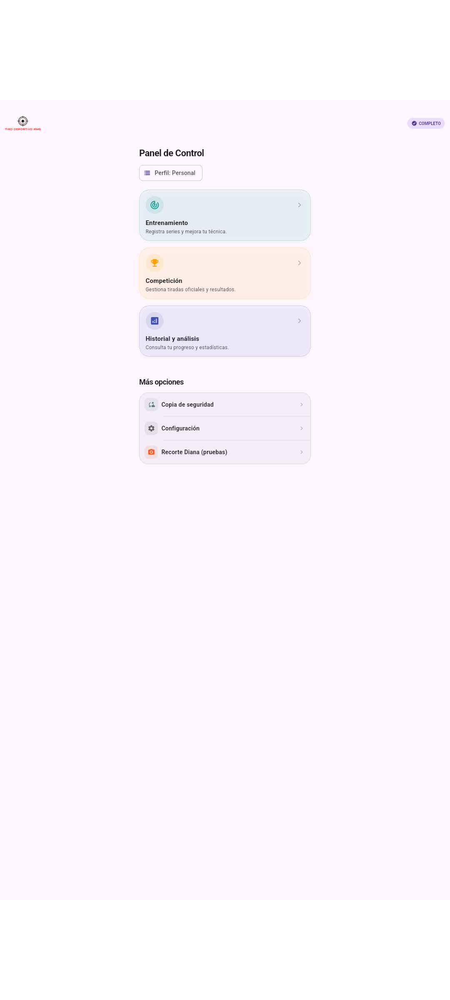
01_home_panel_control.png — Vista vertical (móvil)2. Entrenamiento
Aquí preparas la sesión: eliges el arma, la disciplina (plantilla de tiempos), cómo quieres puntuar (con o sin décimas) y si prefieres tocar la diana o usar el teclado de puntuación. Opcionalmente puedes indicar munición y condiciones del tiro (lugar, distancia, clima).
- Pulsa EMPEZAR ENTRENAMIENTO cuando todo esté listo.
- Si falta un arma o una plantilla, la app te lo dirá: primero debes crearlos en Configuración.
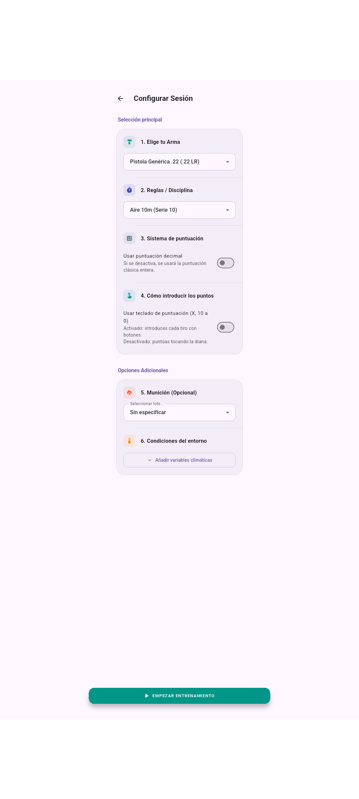
02_entrenamiento.png3. Pantalla de disparo (serie)
Es la pantalla donde registras los impactos: cronómetro, diana (o teclado si lo activaste), total de puntos y botón para finalizar la serie cuando termines.
- Sigue las indicaciones de tiempo de tu disciplina.
- Al pulsar FINALIZAR se guarda la serie y vuelves al flujo anterior.
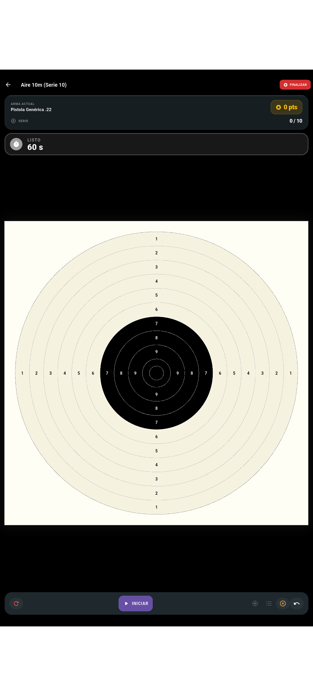
03_sesion_disparo_entrenamiento.png4. Historial
Aquí ves tus entrenamientos y, si tu licencia lo permite, tus competiciones. Puedes filtrar por fechas (hoy, mes, año, rango personalizado).
- Toca una fila para abrir el detalle de esa sesión o torneo.
- Mantén pulsado un elemento si la app ofrece borrar (según pantalla).
- El icono de gráfico en la parte superior lleva a estadísticas cuando está disponible.
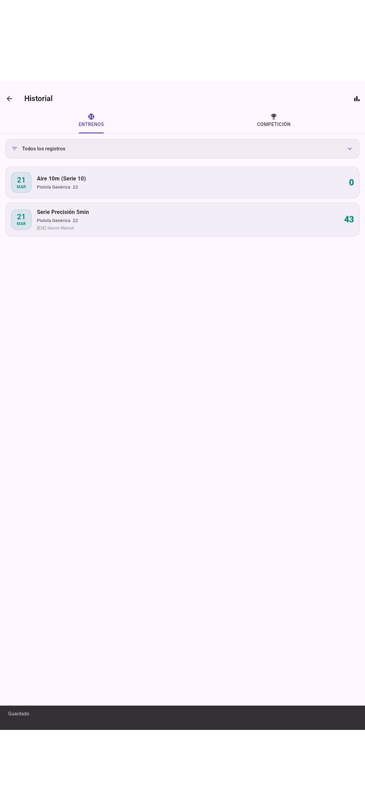
04_historial.png5. Estadísticas y análisis (entrenamientos)
Desde Historial y análisis, el icono de gráfico abre el análisis agregado: filtros por fechas, arma, diana, munición, gráficos de progreso y diagnóstico. El título de la pantalla es Análisis Entrenamientos (en la pestaña de entrenamientos).
Con la pestaña de competiciones activa, el mismo icono lleva a Análisis Competiciones (no incluido en la captura automática por defecto).
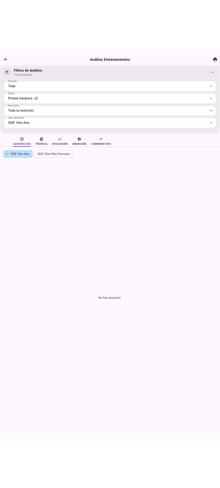
17_analisis_entrenamientos.png6. Detalle de una tirada
Muestra la diana con los impactos, totales, y acciones como editar datos de la sesión, editar tiros o abrir análisis / informes según tu plan.
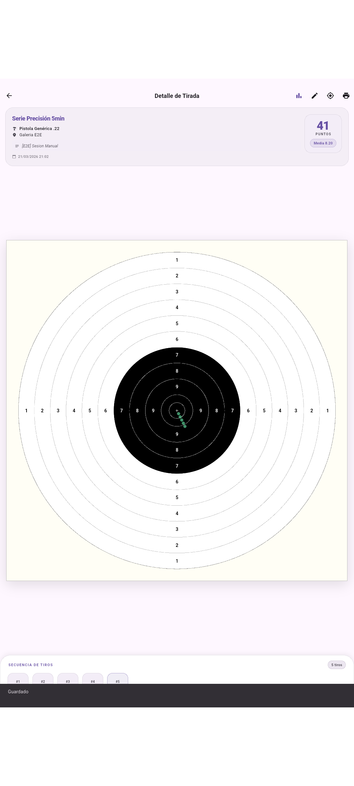
05_detalle_tirada.png — En competiciones el título puede ser distinto (05_detalle_competicion.png).7. Competición — lista de torneos
Aparecen las modalidades disponibles (oficiales y las que hayas creado tú). Toca una fila para empezar un torneo o editar una modalidad personal. El botón flotante permite crear una competición nueva.
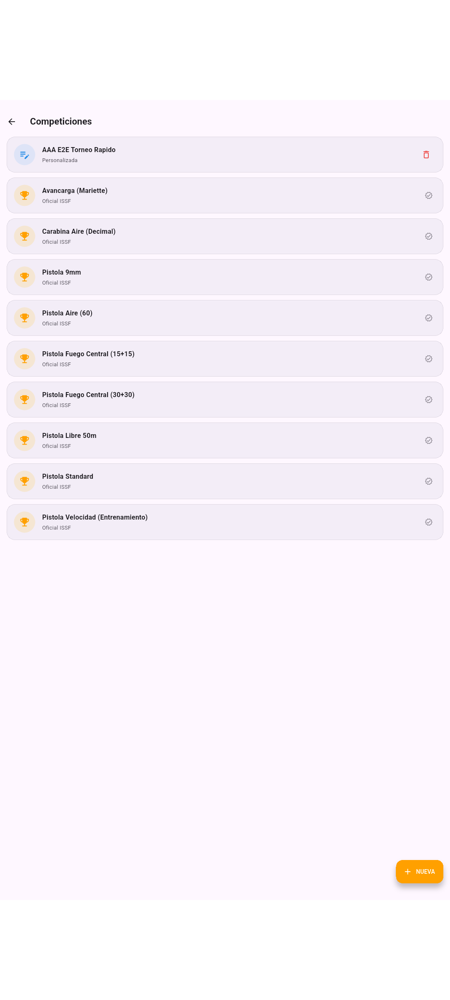
06_competicion.png8. Preparar un torneo
Antes de disparar eliges arma, munición opcional, tipo de puntuación y si usar teclado o diana. Cuando estés listo, pulsa COMENZAR TORNEO.
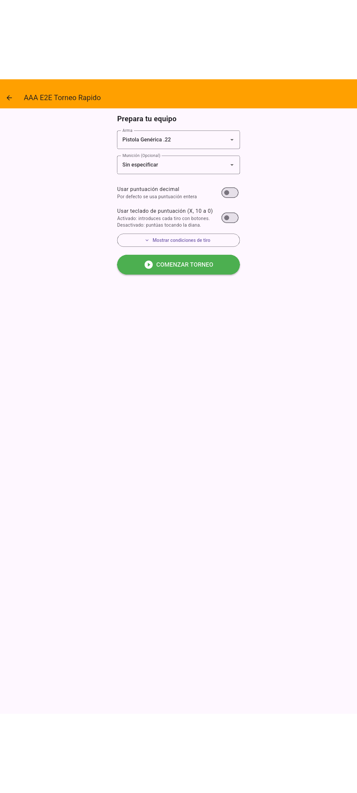
07_competicion_setup.png9. Durante el torneo
Ves la puntuación acumulada del torneo, la fase en curso y un botón para disparar la siguiente serie. Abajo suele aparecer un resumen de lo ya realizado.
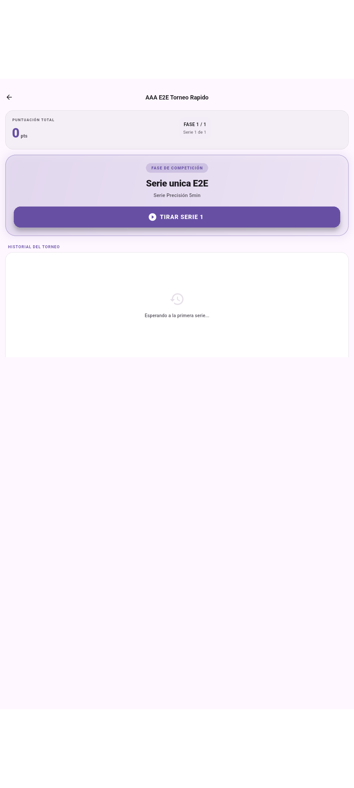
07a_competicion_runner.png10. Serie en competición
Igual que en entrenamiento, pero dentro del torneo: misma diana o teclado, cronómetro y FINALIZAR al acabar la serie.
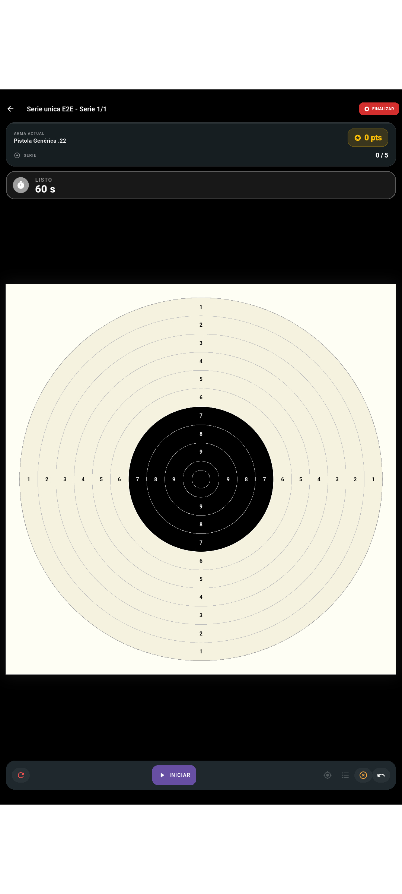
07b_competicion_serie.png11. Resultados finales
Al terminar todas las fases verás el resumen del torneo y la puntuación total. Puedes volver al menú de competición cuando quieras.
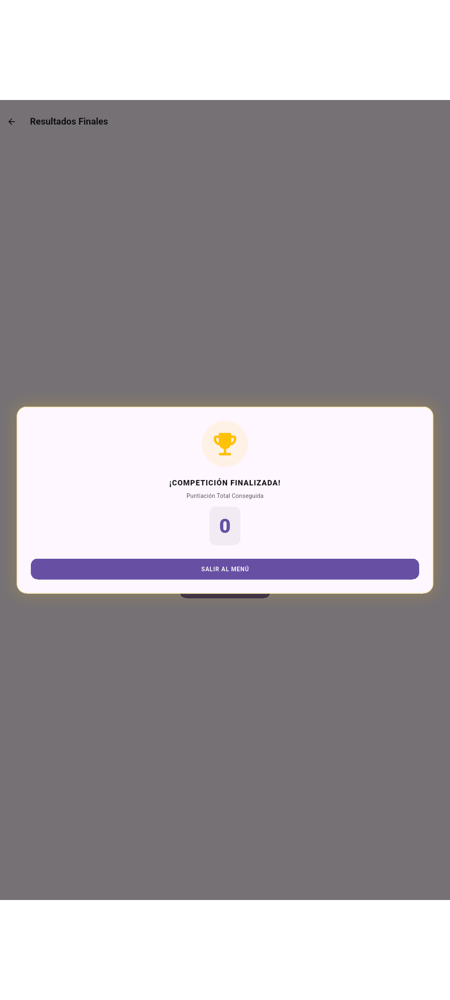
07c_competicion_resultados_finales.png — Puede aparecer primero un mensaje de felicitación; la pantalla de resultados con título «Resultados Finales» es la referencia para el manual.12. Copia de seguridad
Desde aquí puedes exportar una copia de tu base de datos (guardarla en la nube, el ordenador o enviarla por correo) y importar una copia anterior. La importación sustituye los datos actuales: léeme bien las advertencias antes de confirmar.
Según tu plan, esta sección puede mostrar un aviso de licencia.
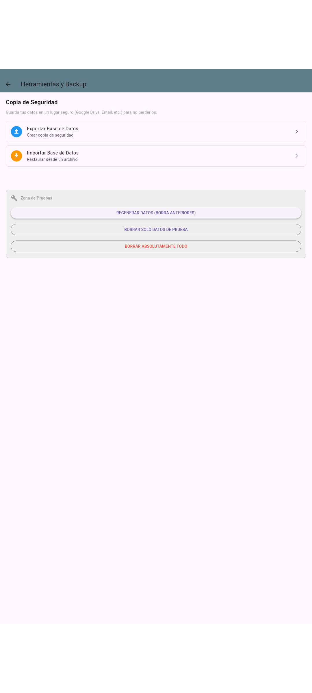
08_backup.png — Si está bloqueado: 08_backup_bloqueado.png13. Configuración y licencia
Desde el listado principal eliges cada bloque: datos del tirador, armas, munición, plantillas de tiempos/series, catálogos (tipos de arma, calibres, dianas), además de feedback al disparar, licencia y actualizaciones. Lo que veas depende de tu plan.
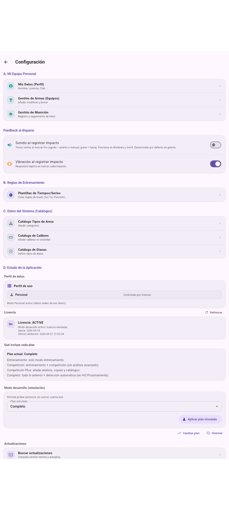
09_configuracion.png — Si hay bloqueo al abrir: 09_configuracion_bloqueado.pngMis datos (perfil)
Nombre, licencia federativa, club y datos que identifican al tirador en informes.
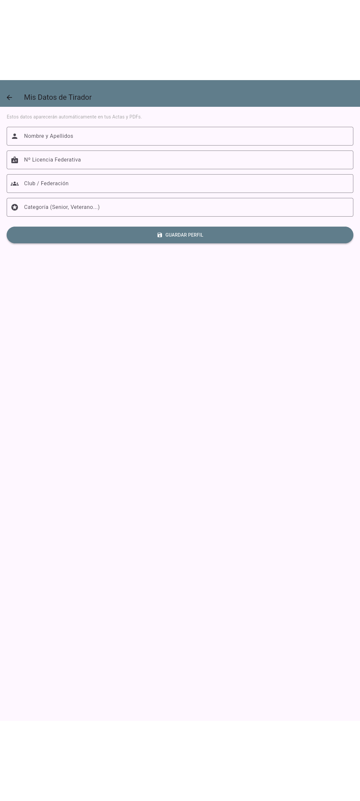
10_mis_datos_perfil.pngGestión de armas (equipos)
Alta, edición y borrado de armas que usarás en entrenamiento y competición.
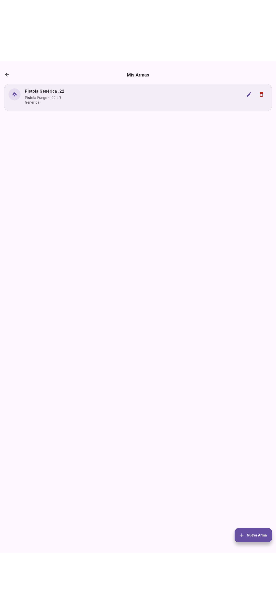
11_mis_armas.pngGestión de munición
Lotes, compras y uso de munición vinculados a tus sesiones.
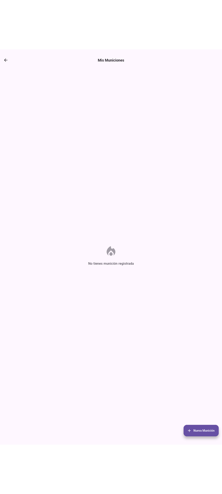
12_mis_municiones.pngPlantillas de tiempos y series
Reglas de preparación, exposición, duelo, disparos por serie, etc.
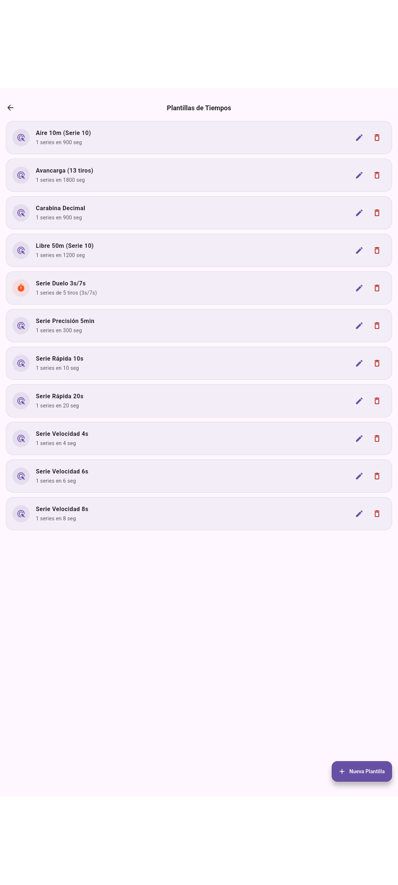
13_plantillas_tiempos.png — Requiere plan con acceso a reglas; si no: 13_plantillas_tiempos_bloqueado.pngCatálogos del sistema
Tipos de arma, calibres y tipos de diana personalizados.
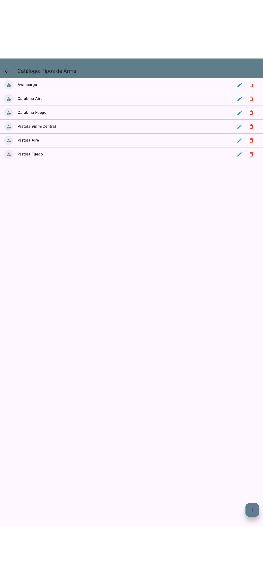
14_catalogo_tipos_arma.png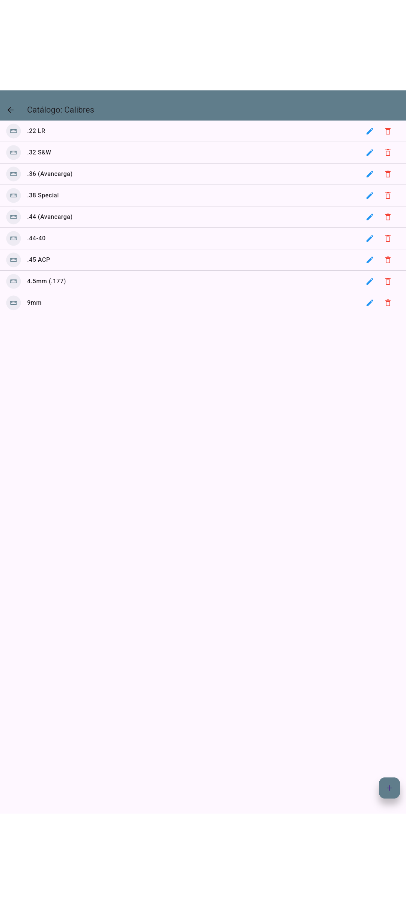
15_catalogo_calibres.png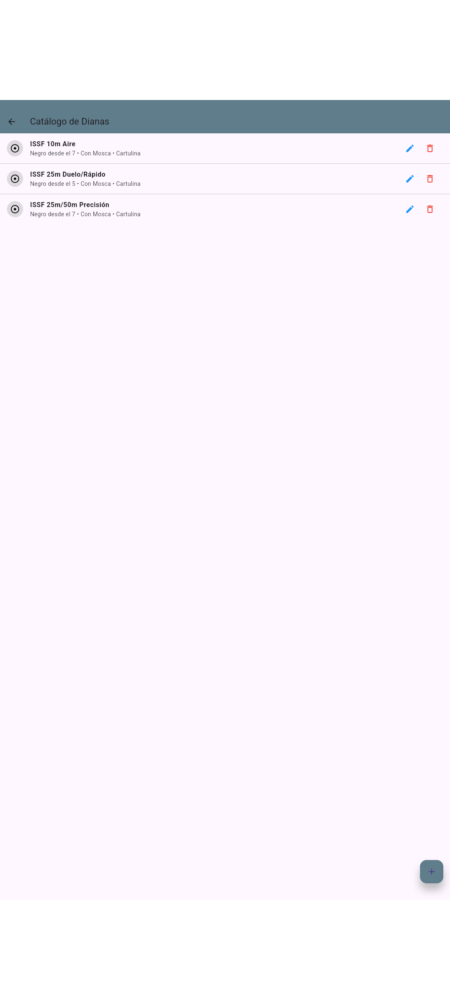
16_catalogo_dianas.png14. Uso en tablet (horizontal)
La misma aplicación adapta el diseño cuando giras el dispositivo o usas una tablet. Puedes generar un segundo juego de capturas añadiendo _landscape al nombre del archivo, por ejemplo 01_home_panel_control_landscape.png, para documentación orientada a pantallas anchas.

01_home_panel_control_landscape.png — Repite el patrón para el resto de pantallas si lo necesitas.